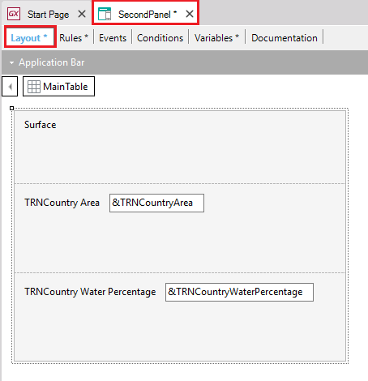

HowTo: Creating a Three Step Wizard With Panels for Smart Devices
Many times information needs to be exchanged between Panel object, this document explains how to do so. This article shows an example of how to exchange variables between Panels for Smart Devices by creating a three step wizard application. Three Panels for Smart Devices are going to be created in order to do this example. Step 1. Create the TransactionCreate the following Transaction and apply the Work With for Smart Devices pattern (see Applying Work With for Smart Devices Pattern). Step 2. Create the three Panels For Smart DevicesCreate the first of the three panels (called "FirstPanel"). Create the following variables: Add the variables to the layout as follows: This Panel calls the next one, so add the following button to the layout (drag and drop the 'Button' control from the toolbox to add the button): And define the action for the button as follows: Event 'Next ->' SecondPanel(&TRNCountryDescription,&TRNCountryName) EndEvent Define the second panel (called "SecondPanel"). Define the parm rule as follows:
Parm(in:&TRNCountryDescription,
in:&TRNCountryName);
Add the following variables to the panel: Add the variables to the layout:  Define the following button (drag and drop the 'Action' control from the toolbox): And define its action as follows. Event 'Next ->' ThirdPanel(&TRNCountryDescription,&TRNCountryName,&TRNCountryArea,&TRNCountryWaterPercentage) EndEvent Define the third panel (called "ThirdPanel"). Define the Parm rule as follows:
Parm(in:&TRNCountryDescription,
in:&TRNCountryName,
in:&TRNCountryArea,
in:&TRNCountryWaterPercentage);
Create the following variables: Note the variable &TRNCountry type: &TRNCountry --> Type: TRNCountry(BC) Add the variables to the layout: Define the following button (drag and drop the 'Action' control from the toolbox): And define its actions as follows: Event 'Finish' Composite &TRNCountry.TRNCountryName = &TRNCountryName &TRNCountry.TRNCountryDescription = &TRNCountryDescription &TRNCountry.TRNCountryArea = &TRNCountryArea &TRNCountry.TRNCountryWaterPercentage = &TRNCountryWaterPercentage &TRNCountry.TRNCountryPopulationEstimate = &TRNCountryPopulationEstimate &TRNCountry.TRNCountryGDPNominalTotal = &TRNCountryGDPNominalTotal &TRNCountry.TRNCountryGDPNominalPerCapita = &TRNCountryGDPNominalPerCapita &TRNCountry.Save() BasicWizard() EndComposite EndEvent Create a dashboard called "BasicWizard" and add the work with for smart devices of the transaction 'TRNCountry' and the 'FirstPanel' to it. Note: you can add the items to the dashboard by draging and droping the Panel 'FirstPanel' and the work with for smart devices of the 'TRNCountry' transaction from the folder view . Now we have to go to add the first Panel to the dashboard "BasicWizard". Step 3. Done!All the object needed for this example have been created. Press F5 and see the results. ExamplesAndroid:Pressing next: Pressing next: Pressing finish and going to the country's work with item:
|